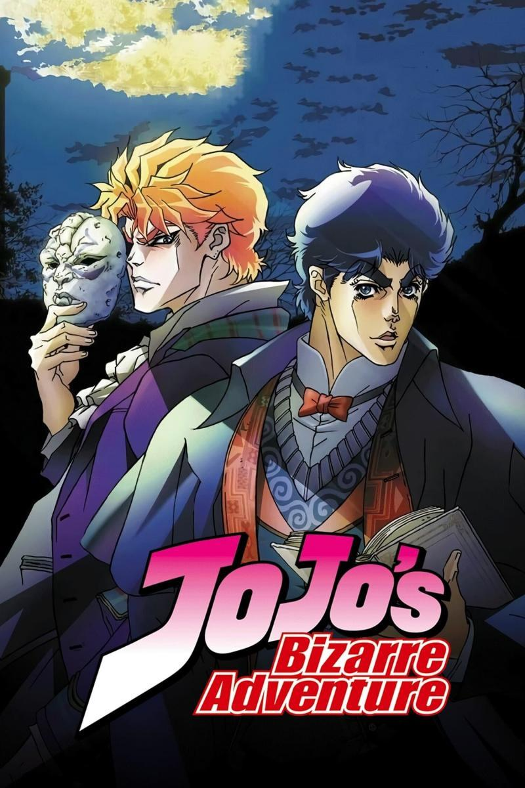

Jojos Bizzarre adventure parte 1
 La primera parte de JoJo's Bizarre Adventure, conocida como "Phantom Blood", nos introduce al joven Jonathan Joestar y su tumultuosa relación con su hermano adoptivo Dio Brando. Ambientada en la Inglaterra del siglo XIX, la historia sigue la lucha de Jonathan contra Dio, quien busca poder a toda costa, incluso recurriendo a convertirse en un vampiro. La parte 1 es un relato épico de rivalidad y venganza, lleno de drama y acción, donde Jonathan se enfrenta a desafíos cada vez mayores mientras lucha por proteger a su familia y detener la oscuridad que amenaza con consumirlo todo.
A través de su protagonista carismático y sus impactantes giros argumentales, "Phantom Blood" establece los fundamentos de la saga JoJo, explorando temas de honor, lealtad y redención en medio de un contexto histórico vibrante y lleno de misterio. Esta parte no solo sienta las bases para las futuras aventuras de la familia Joestar, sino que también deja una marca indeleble en el corazón de los espectadores, con su combinación única de acción emocionante y emociones profundas.